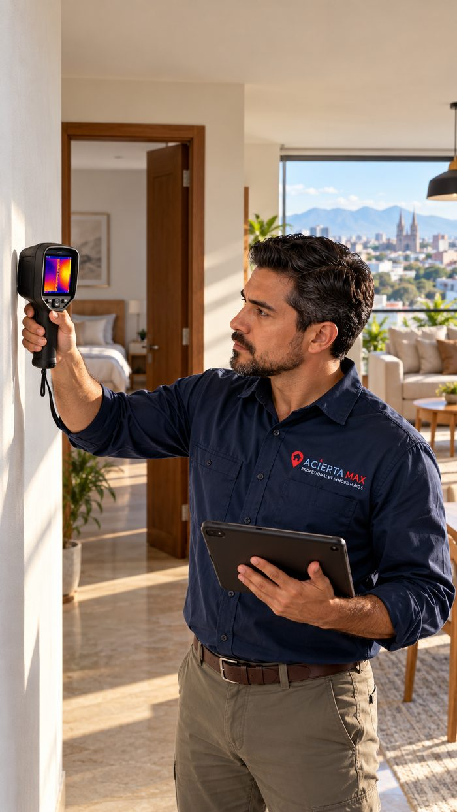

Miles de opciones en venta y renta, con acompañamiento real en cada paso — crédito, notario, documentación — no solo un anuncio.
Precalificación de crédito e Infonavit, selección de notario, qué exige PROFECO, cómo recibir tu propiedad — coaching real de principio a fin, con 20 años de experiencia ejecutiva respaldando cada paso.
Empieza tu proceso con MAXSabemos exactamente qué te alcanza antes de que te enamores de algo que no puedes pagar.
No te mandamos una lista genérica — acotamos contigo hasta encontrar lo correcto.
Te decimos exactamente qué va a pedir el banco o Infonavit, sin sorpresas.
Notario calificado, requisitos de PROFECO y NOM, y cómo recibir tu propiedad correctamente.

Revisión física básica y análisis documental preventivo antes de comprar, rentar o entregar una propiedad — agua, luz, humedades, gas, drenaje, y que todos los documentos legales estén en orden.
Desde $45/m² revisado · mínimo $3,500 MXN en la ZMG
Cotizar mi revisión → Conoce el servicio y el reporte de muestraGuadalajara, Zapopan, Tlaquepaque, Tonalá y Tlajomulco de Zúñiga para vivienda, y además El Salto para inmuebles comerciales: toda la Zona Metropolitana de Guadalajara.
Unas 17,600 propiedades de vivienda y comerciales, en venta y renta, consolidadas de distintas fuentes y actualizadas periódicamente.
Acompañamos todo el proceso: precalificación de crédito e Infonavit, búsqueda guiada, oferta y documentación, selección de notario y el cierre — no solo la publicación.
Una revisión física básica y un análisis documental preventivo de la propiedad antes de comprar, rentar o entregarla: agua, luz, humedades, gas, drenaje y que los documentos legales estén en orden. Desde $45/m² revisado, mínimo $3,500 MXN.
Sí — con nuestro simulador puedes comparar crédito bancario, Infonavit y Cofinavit, y nuestro equipo de crédito te acompaña en la gestión.
Puedes buscar directamente en esta página, dibujar tu zona en el mapa, o responder unas preguntas en "Te acompaño paso a paso" para que un coach de Acierta Max te dé seguimiento.